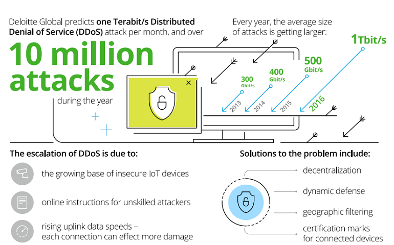

The Growth of DDoS Attacks
Due to the increasing number of devices that are part of the Internet of Things (IoT), the likelihood of
Distributed Denial-of-Service (DDoS) attacks has grown. This issue isn’t solely due to the fact that there
are more devices, but due to the factthat proper password security isn’t considered a high priority by many users.
A DDoS attack typically occurs when a network becomes unavailable to its users due to an
overwhelming number of requests being made to the network. The reasons as to why DDoS attacks are perpetrated
vary, but for the most part the end goal is usually the same where the perpetrator will use a 'bot-net' of
infected machines to make the large number of requests to take down a network.

credit: Deloitte
Recent Attacks
Since the purpose of IoT devices is to remain connected to the internet, they are prime targets to be infected
with malicious software to become part of a bot-net to be used in a DDoS attack. In fact, on October 21, 2016
there was a DDoS attack that disrupted a large amount of internet traffic in US. This attack targeted the Domain
Name Systems(DNS) which is the system that handles all information requests on the internet. By targeting this
system, many websites faced difficulty in handling legitimate requests from users, or went down entirely.
The Risk of Defaults
One of the main factors that allowed this DDoS attack to take places was the fact that there were many connected
devices that were unsecured. In this case, unsecured doesn’t just mean not having a password set, but also just
leaving the default password as protection. In the table below, a study was preformed looking at the top passwords
used by malware to gain access to connected systems and surprisingly, most of them were just the system defaults.
Password security on these connected devices should be a high priority for all users, from the home user to
corporation IT, as these default passwords can be found in all systems such as a home router or any device that
is connected to a network.
| Top User Names | Top Passwords |
|---|---|
| root | admin |
| admin | root |
| DUP root | 123456 |
| access | ubnt |
| DUP admin | password |
| test | 1234 |
| oracle | test |
| credit: Symantec | |
When these IoT devices are shipped, they usually are set up with a default user name and password (i.e root , admin), these passwords are well known and can easily be found online as well for different devices. If users aren't security conscious they may leave these default passwords set for as long as they own the device. In these cases its easier for hackers to gain access to these devices without the owner actually knowing. When these devices are bought by consumers they should automatically have to change thee system passwords so that the defaults are never used. After knowing that there are risks associated with these devices, consumers (both personal and business) should be urged to remain security conscious and make sure their devices remain secure.
Protecting Your Devices
While manufactures should be working on creating more secure connected devices, the responsibility of security also falls onto the user. Listed in the table above are the top passwords that are used by IoT malware to try to gain access to devices. These passwords are, for the most part, defaults that were left on the devices and unfortunately, on many of these devices these passwords are never changed. Listed here are some common tips and advice to make secure passwords and through that, secure devices.
Sources:
10 things to know about the October 21 IoT DDoS attacks
IoT devices being increasingly used for DDoS attacks